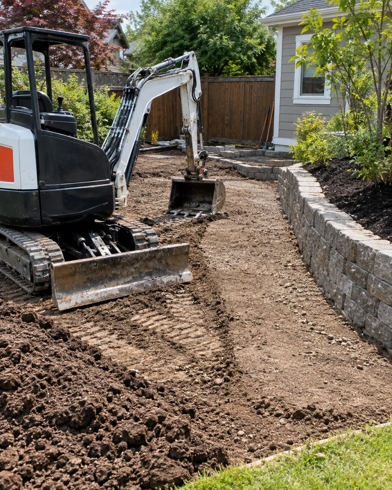
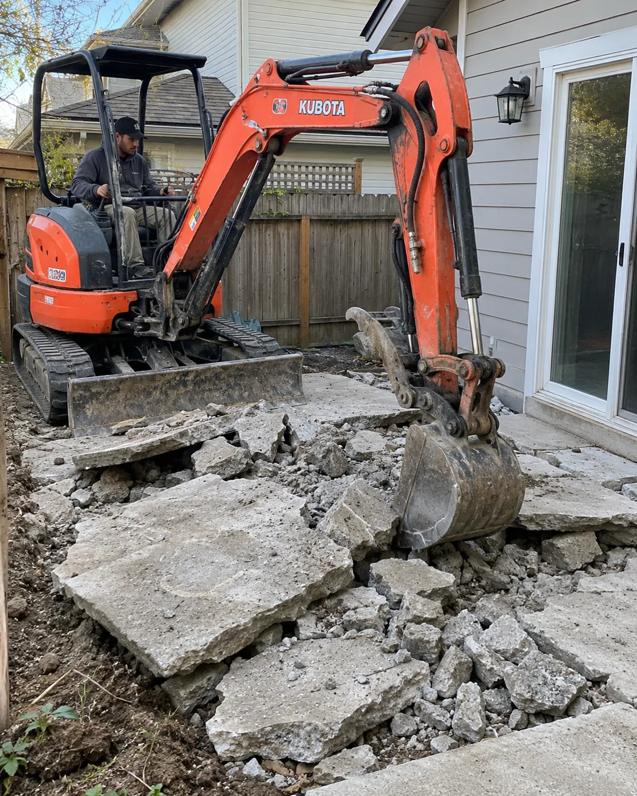
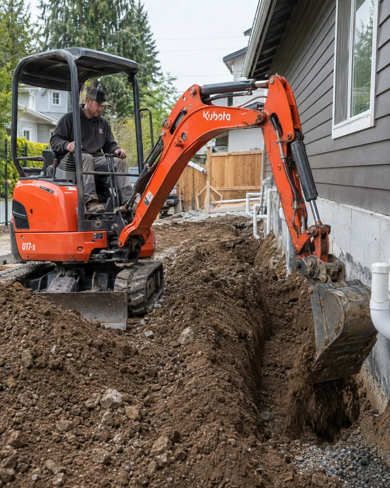

Drainage excavation in Sydney
Trenching and ground preparation for stormwater and drainage installations.
Drainage
Drainage excavation and preparation to manage water around the site.
Poor drainage leads to soggy yards, water against walls and damage over time. Good drainage starts with trenches and ground dug to the right depth and fall.
We prepare the ground for stormwater and drainage installations, working alongside your plumber or landscaper, including in tight backyards and side passages.
When you might need it
- Water pools in your yard or against the house
- A retaining wall needs drainage behind it
- New stormwater lines or pits are being installed
How it works
From enquiry to finished site.
Based in Dural and working across Sydney, including the Hills District, North West Sydney and the Hawkesbury.
- 01Free site visit
We look at the job
We come out to check access, levels and scope in person.
- 02Free quote
You get a clear price
A quote based on the real site, with no obligation.
- 03The work
Done and left ready
Completed carefully, with the site left ready for the next stage.
Do you install the pipes?
We prepare the excavation and ground. Pipe installation and connections are usually done by your licensed plumber, and we can work alongside them.
Can you fix a waterlogged backyard?
We can regrade the ground and dig trenches for drainage so water is directed away. We’ll look at the cause on the free site visit.
Can you work in a narrow side passage?
Yes. That’s a common spot for drainage work and exactly the kind of tight access we handle.
Related services
Often booked together.

Site PreparationSite clearing, cut and fill, levelling and preparation for the next construction stage.
Demolition & RemovalRemoval of concrete, pavers and selected structures with controlled site clearing.
Footings & FoundationsExcavation for strip footings, pads, retaining walls and foundation preparation.
Ready to get started?
Need drainage in Sydney?
Tell us about the job and we’ll arrange a free site visit and quote. No cost, no obligation.